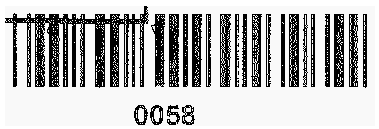
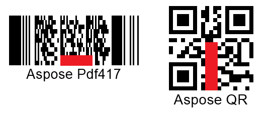

Special Recognition Cases
Barcode Images with Gaussian Noise
Gaussian noise is one of the most common damages that may deteriorate the quality of a source barcode. Most of difficulties correspond to the cases when barcode images have the monochrome color scheme or the distortion grain is considerably bigger than the minimal element of a barcode. To cope with these effects, median filtering mechanisms suitable for both 1D and 2D symbologies can be applied. Median filtering mechanisms also affect image quality due to the possible removal of some barcode elements together with noise; however, they still may be helpful in improving readability of key barcode modules.
Median Filtering for 2D Barcodes
In Aspose.BarCode for Cloud, median filtering can be implemented using a special method called setAllowMedianSmoothing and setting the median filtering window using the setMedianSmoothingWindowSize method. Unlike 1D barcodes, automated selection of a suitable median filtering window is not supported for 2D types.

Median Filtering for 1D Barcodes
One-dimensional filtering for linear barcodes can be set using a method called setAllowSaltAndPaperFiltering. In this case, the filtering window size is selected automatically.

Median Filtering for Postal Barcodes
One-dimensional median filtering for postal symbologies can be performed using the AllowMicroWhiteSpotsRemoving method. The size of the filtering window is set automatically.

Filtering Out White Spots
The presence of white spots in barcode images is a frequent problem that appears while sending documents with barcodes through fax transmission. To mitigate this issue in Aspose.BarCode for Cloud, it is possible to use a special method called setAllowWhiteSpotsRemoving that allows filtering out not all Gaussian noise but only white spots.

Reducing Barcode Image Size to Eliminate Visual Artifacts
In some cases, distortions caused by excessive scaling of a barcode image can be mitigated by reducing the scale space. In Aspose.BarCode for Cloud, it can be done using a special method called setAllowDecreasedImage. Its purpose is to reduce the size of an image and in this way, to facilitate barcode reading by eliminating visual artifacts.

Reading Inverted Barcode Images
Aspose.BarCode for Cloud enables reading barcode images with inverted colors. To do this, it is required to enable a special method called setAllowInvertImage.

Detecting Colored Barcodes on Colored Background
To read colored barcodes on a colored background, Aspose.BarCode for Cloud provides a special method called setAllowComplexBackground that attempts to distinguish the colored background from barcode labels through color quantization and then subtract it. It should be noted that enabling this parameter results in considerable deceleration of recognition speed and thus should be used in special cases only.

Reading Barcodes with Erased or Displaced Bars
While scanning or sending barcode images using fax transmission, the problem of displaced or erased bars in 1D barcode labels often appears, especially, in those printed out using ink-jet printers. To resolve this issue, Aspose.BarCode for Cloud provides two methods called setAllowOneDWipedBarsRestoration and setCheckMore1DVariants that allow selecting the most suitable recognition option according to the checksum value and other barcode elements. However, it should be noted that enabling these settings may result in incorrect recognition of 1D barcodes.

Reading Evidently Incorrect Barcodes
In cases when it is necessary just to detect the presence of barcodes regardless of their validity and corresponding recognition correctness, it is possible to enable two special settings called setAllowIncorrectBarcodes and setReadTinyBarcodes. The first one is used to attempt performing partial barcode recognition even if the reading process has provided incorrect results; in this case, the barcode data is decoded with BarCodeConfidence being set to None, which means that the correctness of recognition is not guaranteed.
The setReadTinyBarcodes method facilitates reading small barcode labels in large images. It is ignored if the setAllowIncorrectBarcodes method is called passing the True value. However, enabling this parameter may result in recognizing false barcodes in place of actual text or tables.

Reading Severely Distorted QR Codes and Micro QR Codes
Aspose.BarCode for Cloud allows reading severely corrupted QR Code and Micro QR Code labels. This can be enabled by setting the setAllowQRMicroQrRestoration parameter.

Reading Industrial Data Matrix Barcodes
Industrial Data Matrix barcodes often have dotted patterns or other decoration elements and are placed onto metallic surfaces, in this way, creating embossed indelible barcode labels. To facilitate the recognition of such barcodes, it is possible to enable a special parameter called setAllowDatamatrixIndustrialBarcodes that allows reading dashed labels in a slow mode.